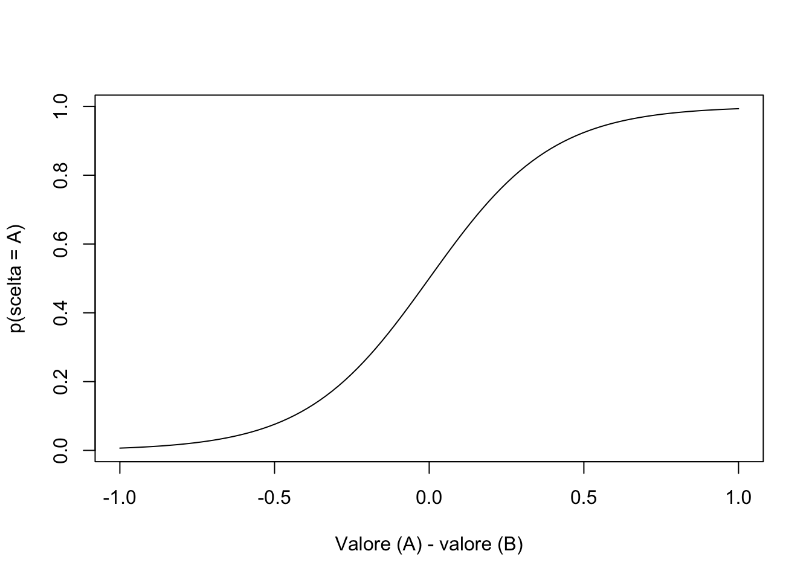

update_rw <- function(value, alpha=0.15, lambda=1) {
value + alpha * (lambda - value)
}Rescorla-Wagner
LM-51
R
Un semplice modello di apprendimento associativo.
Regola di Rescorla-Wagner
Il modello di Rescorla-Wagner fornisce una regola di apprendimento che descrive come cambia la forza associativa durante il condizionamento pavloviano. Supponiamo di prendere uno stimolo inizialmente neutro (ad es. un tono) e di associarlo a un risultato che ha un valore intrinseco per l’organismo (ad es. un premio – oppure una punizione). Col tempo l’organismo impara ad associare il tono al premio e risponderà al tono più o meno allo stesso modo in cui risponde al premio. In questo esempio il premio è lo stimolo incondizionato (US) e il tono è stimolo condizionato (SC).
Secondo il modello Rescorla-Wagner, la regola per l’aggiornamento della forza associativa tra US e SC è basata sul divario tra l’aspettativa di ricompensa e il risultato che viene effettivamente ottenuto:
\[ v_{s,t} = v_{s,t-1} + \alpha \cdot (\lambda_{t-1} - v_{s,t-1}), \] dove
- \(v_{s,t}\) è il valore dello stimolo \(s\) nella prova \(t\), che riflette l’aspettativa di una ricompensa,
- \(\lambda_{t-1}\) è la ricompensa ricevuta nella prova \(t-1\),
- \(\alpha\) è il tasso di apprendimento.
Pertanto, il valore assegnato ad uno stimolo viene aggiornato in base all’errore di previsione (la differenza tra il feedback ricevuto \(\lambda_{t-1}\) e l’aspettativa di ricompensa \(v_{s,t-1}\)).
Il tasso di apprendimento \(\alpha \in [0, 1]\) determina quanto viene pesato questo errore di previsione nell’aggiornamento dell’aspettativa di ricompensa alla luce del feedback che è stato ottenuto.
Condizionamento
Per chiarire il funzionamento della regola di Rescorla-Wagner la implementiamo in una funzione R:
In una prima simulazione costituita da una sequenza di 40 prove esaminiamo come varia l’aspettativa di ricompensa dello stimolo \(s\) nel tempo. Immaginiamo che il feedback ottenuto sia sempre pari ad una ricompensa (\(\lambda = 1\)). Nella prima prova, il valore dello stimolo è inizializzato a zero.
n_trials <- 40
strength <- numeric(n_trials)
strength [1] 0 0 0 0 0 0 0 0 0 0 0 0 0 0 0 0 0 0 0 0 0 0 0 0 0 0 0 0 0 0 0 0 0 0 0 0 0 0
[39] 0 0for(trial in 2:n_trials) {
strength[trial] <- update_rw( strength[trial-1] )
}
print(strength) [1] 0.0000000 0.1500000 0.2775000 0.3858750 0.4779937 0.5562947 0.6228505
[8] 0.6794229 0.7275095 0.7683831 0.8031256 0.8326568 0.8577582 0.8790945
[15] 0.8972303 0.9126458 0.9257489 0.9368866 0.9463536 0.9544006 0.9612405
[22] 0.9670544 0.9719962 0.9761968 0.9797673 0.9828022 0.9853819 0.9875746
[29] 0.9894384 0.9910226 0.9923692 0.9935139 0.9944868 0.9953138 0.9960167
[36] 0.9966142 0.9971221 0.9975538 0.9979207 0.9982326plot(
1:n_trials,
strength,
type = 'l',
ylim = c(0,1),
xlab = "Prove",
ylab = "Aspettativa di ricompensa")
points(1:n_trials, strength)Applicando la regola di Rescorla-Wagner, il valore (ovvero, l’aspettativa di ricompensa) dello stimolo \(s\), nel caso di feedback positivi, aumenta progressivamente fino a raggiungere l’asintoto di 1. Nella simulazione precedente abbiamo posto \(\alpha = 0.15\). Con \(\alpha = 0.5\) otteniamo:
strength <- numeric(n_trials)
for(trial in 2:n_trials) {
strength[trial] <- update_rw(alpha = 0.5, strength[trial-1] )
}
plot(
1:n_trials,
strength,
type = 'l',
ylim = c(0,1),
xlab = "Prove",
ylab = "Aspettativa di ricompensa"
)
points(1:n_trials, strength)È chiaro dunque che il parametro \(\alpha\) determina la velocità con la quale viene aggiornata l’aspettativa di ricompensa.
Estinzione
Consideriamo ora l’estinzione dell’associazione che è stata appresa. In questa seconda simulazione, le prime 25 prove saranno identiche a quelle della simulazione precedente. In esse verrà sempre fornita una ricompensa (\(\lambda = 1)\). Le ultime 25 prove, invece, forniranno un feedback negativo, ovvero, \(\lambda = 0\) – possiamo immaginare il feedback come l’assenza di premio.
Quello che ci aspettiamo di vedere in questa situazione è che dopo la prova 25, quando il premio viene rimosso, la forza dell’associazione inizi a indebolirsi perché l’agente sta ora associando il CS con l’assenza di premio (cioè il parametro \(\lambda\) è sceso a zero e quindi l’associazione \(v\) ritorna lentamente al valore iniziale).
n_trials <- 50
strength <- numeric(n_trials)
lambda <- 1 # initial reward value
for(trial in 2:n_trials) {
# remove the shock after trial 25
if(trial > 25) {
lambda <- 0
}
# update associative strength on each trial
strength[trial] <- update_rw(
value = strength[trial-1],
lambda = lambda
)
}
plot(
1:n_trials,
strength,
type = 'l',
ylim = c(0,1),
xlab = "Prove",
ylab = "Aspettativa di ricompensa"
)
points(1:n_trials, strength)L’estinzione è efficace nel rimuovere l’associazione, ma la sua efficacia richiede del tempo, non è immediata. Se ci fermiamo alla 35-esima prova, per esempio, allo stimolo \(s\) sarà ancora associata una piccola aspettativa di ricompensa.
Regola soft-max
Una volta attribuita una aspettativa di ricompensa agli stimoli, l’agente deve scegliere tra i diversi stimoli che sono presenti. Potrebbe sembrare ovvio scegliere, tra i vari stimoli presenti, quello a cui è associata l’aspettativa di ricompensa più altra (“massimizzazione della probabilità”) in questo particolare compito. Ma gli organismi biologici non si comportano così. Piuttosto, tendono a scegliere più spesso lo stimolo a cui è associata l’aspettativa di ricompensa maggiore, ma non sempre. Ci sono marcate differenze individuali nella strategia di scelta che si colloca tra due estremi: un’estremo è quello in cui l’aspettativa di valore determina la scelta; l’altro estremo è quello in cui la scelta tra gli stimoli è puramente casuale (ovvero, non è in alcun modo determinata dall’aspettativa di ricompensa associata agli stimoli).
Per descrivere il continuum tra queste due diverse strategie di scelta
Per modellare il modo in cui gli agenti traducono i valori di aspettativa di ricompensa in una scelta, viene utilizzato un modello in grado di catturare queste diverse possibili strategie di scelta. A questo fine viene usata la cosiddetta equazione soft-max:
\[ p(s) = \frac{\exp(\beta v_s)}{\sum_i \exp(\beta v_i)}. \] Se supponiamo che ci siano solo due stimoli, A e B, dove \(v_B = 1 - v_A\), allora otteniamo la situazione seguente.
softmax <- function(beta, x) {
1 / (1 + exp(-beta * x))
}beta <- 5
x <- seq(-1, 1, length.out = 100)
y <- softmax(beta, x)
plot(
x,
y,
type = 'l',
#ylim = c(0,1),
xlab = "Valore (A) - valore (B)",
ylab = "p(scelta = A)"
)
Si noti che
- La probabilità di scegliere lo stimolo A aumenta in modo monotono con la differenza di valore A - B.
- La funzione softmax ci dice che l’agente sceglierà lo stimolo A la maggior parte delle volte quando \(v_A > v_B\), ma non sempre.
- Da qui deriva il termine ‘softmax’: l’agente sceglie lo stimolo con il valore maggiore la maggior parte delle volte (ma non sempre), quindi questa è una funzione di massimizzazione ‘soft’.
Informazioni sulla sessione di lavoro
Session Info
Sono qui fornite le informazioni sulla sessione di lavoro insieme all’elenco dei pacchetti usati. I pacchetti contrassegnati con un asterisco(*) sono stati usati esplicitamente nello script.
─ Session info ───────────────────────────────────────────────────────────────
setting value
version R version 4.4.2 (2024-10-31)
os macOS Sequoia 15.2
system aarch64, darwin20
ui X11
language (EN)
collate en_US.UTF-8
ctype en_US.UTF-8
tz Europe/Rome
date 2025-01-25
pandoc 3.6.2 @ /opt/homebrew/bin/ (via rmarkdown)
─ Packages ───────────────────────────────────────────────────────────────────
package * version date (UTC) lib source
cli 3.6.3 2024-06-21 [1] CRAN (R 4.4.0)
digest 0.6.37 2024-08-19 [1] CRAN (R 4.4.1)
evaluate 1.0.3 2025-01-10 [1] CRAN (R 4.4.1)
fastmap 1.2.0 2024-05-15 [1] CRAN (R 4.4.0)
htmltools 0.5.8.1 2024-04-04 [1] CRAN (R 4.4.0)
htmlwidgets 1.6.4 2023-12-06 [1] CRAN (R 4.4.0)
jsonlite 1.8.9 2024-09-20 [1] CRAN (R 4.4.1)
knitr 1.49 2024-11-08 [1] CRAN (R 4.4.1)
rlang 1.1.4 2024-06-04 [1] CRAN (R 4.4.0)
rmarkdown 2.29 2024-11-04 [1] CRAN (R 4.4.1)
rstudioapi 0.17.1 2024-10-22 [1] CRAN (R 4.4.1)
sessioninfo 1.2.2 2021-12-06 [1] CRAN (R 4.4.0)
xfun 0.50 2025-01-07 [1] CRAN (R 4.4.1)
yaml 2.3.10 2024-07-26 [1] CRAN (R 4.4.0)
[1] /Library/Frameworks/R.framework/Versions/4.4-arm64/Resources/library
──────────────────────────────────────────────────────────────────────────────